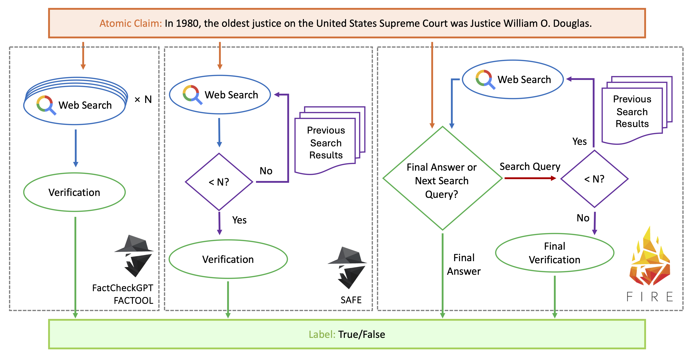
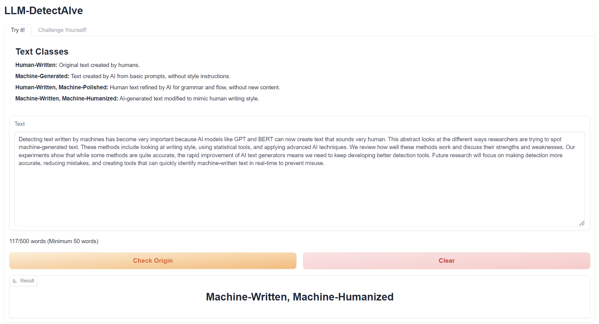

Financial AI Evaluation
Benchmarks for symbolic reasoning, analyst workflows, document QA, recommendation, and financial reporting.
About
I am a postdoctoral associate at Mohamed bin Zayed University of Artificial Intelligence. My work studies whether language technologies can reason with evidence, structured constraints, multilingual inputs, and domain risk, with a focus on financial NLP, fact-checking, machine-generated text detection, and verifiable reasoning.
Research
Benchmarks for symbolic reasoning, analyst workflows, document QA, recommendation, and financial reporting.
Retrieval, verification, and claim-writing systems that keep model outputs tied to traceable evidence.
Shared tasks and diagnostic tools for identifying machine-generated writing across languages and domains.
Evaluation resources for Arabic, cross-lingual, multimodal, and culturally grounded model behavior.
News
Projects

ACL 2026 Main · Oral
A symbolic benchmark for verifiable chain-of-thought financial reasoning, designed to expose whether models can follow auditable financial logic.



ACL 2026 Main
A benchmark for Arabic financial and Shari'ah-compliant reasoning across linguistic and domain-specific constraints.


Publications
Mentoring
I work closely with students and early-stage collaborators from problem framing to benchmark design, experiments, writing, rebuttal strategy, and public release.
Community Service
Lab organizer for multilingual and multimodal financial AI evaluation, covering participant communication, final-test portals, leaderboards, and working-note flow.
Organizing-committee work for shared-task communication, submission checks, and participant-facing camera-ready/citation issues.
Shared-task and overview-paper work around generative-AI authorship verification, AI text detection, and multimodal reasoning challenges.
Reviewed for ACL Rolling Review, NeurIPS, COLM, EMNLP, ALTA, CHOMPS, TFAI, MisD, and SemEval task proposals, etc.